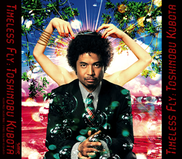
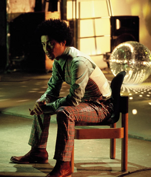
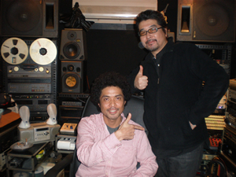
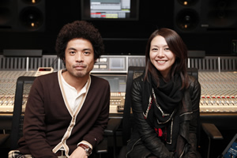

- Is it over?
-

Track.07「Is it over?」
別れていくことの切なさを歌う曲のイメージに「この曲にはどうしてもJUJUの声が欲しい」という久保田の希望のもと、制作がスタートした楽曲です。
そんなこの曲の核となるJUJUのボーカルは、毎回のサビと、エンディングにループとして登場します。
「最もJUJUらしさが発揮できるように」ということで、ボーカルを収録する前のカラオケのレコーディングでは音程を3パターン用意し、その中から一番JUJUのキーに合う音程を選ぶというほど、こだわって制作されました。
その甲斐もあり、歌い始めてみるとイメージに合い過ぎというくらい合っていて、何の問題もなく順調にレコーディング作業は進みました。
予定よりも早い進行だったので、サビ以外にも何か足してみようかというスタッフからの提案もありましたが、「サビだけに出てくるほうがよりインパクトがあるし、より贅沢」という久保田の思い入れが強く、予定通りサビだけでのパフォーマンスとなりました。
お互いニューヨークでの共通の知人や話題などもあり、和気あいあいな雰囲気で終始レコーディング作業は進められました。最終段階ではJUJUの歌声を聴きあらたなインスピレーションが生まれた久保田が、さらにかけ合いのアドリブを録り直し、両者の対比がとても印象的なサビができあがりました。
ページ上部へ
- FLYING EASY LOVING CRAZY (TOSHINOBU KUBOTA feat. MISIA)
-
Track.04「FLYING EASY LOVING CRAZY
(TOSHINOBU KUBOTA feat. MISIA)」
久保田がラッパーKREVAとのコラボレーションを経て次に興味を抱いたアーティストが、圧倒的歌唱力を誇る世紀の歌姫MISIAでした。
以前に楽曲を提供したことなどもあり、ぜひ一緒に歌いたいという久保田からのラブコールにより実現したコラボレーションです。
実は話が具体的に動き出す前から、曲のイメージはある程度できており、サビのメロディも久保田が暖めていたものがありました。そしてレコーディングでMISIAのパフォーマンスの高さに反応するように、ワンフレーズ、ワンフレーズがブラッシュアップされていきました。
レコーディング中は常に高い集中力を発揮するMISIAに対し、久保田は「全ての曲を自分のものにする力がある。MISIAとの競演だからこそできることがある。」と大きな手応えを感じたようです。
そしてこのスケール感のあるラブソングをアレンジしているのは、久保田と同じくファンキー・ジャムに所属するシンガーソングライターの森大輔です。クラシカルかつアカデミックな楽器の積み重なりが心地よいサウンドを作り出しています。
本物のアーティスト同士が自由に響き合い、お互いが刺激し合いながら完成した王道ラブバラードです。
ページ上部へ
- M☆A☆G☆I☆C (KUBOTA meets KREVA)
-
Track.10「M☆A☆G☆I☆C (KUBOTA meets KREVA)」
国民的ラップスターKREVAと共に作り上げた楽曲で、久保田にとっては初となる日本人アーティストとのコラボレーション作品です。数年前に久保田がNYから一時帰国した時に偶然テレビで流れていたKREVAの曲に興味を抱き、それがコラボレーションのきっかけとなりました。
制作はKREVAのスタジオで行われ、KREVA作のトラックを聴きながら久保田がメロディをその場でつけていくというスタイルで進行しました。音楽ジャンルも世代も違う両者ですが、制作において意見が食い違うことはほとんどありませんでした。
お互いのパフォーマンスやスキルにお互いが刺激を受けリスペクトを示し、そして時には作業中にテキーラを飲んだりもして、終始リラックスした状態でのレコーディングでした。レコーディングが終わると近くのラーメン屋で食事をしたりもしていたようです。
グルーヴもフロウもセンスも全てがシンクロして、KUBOTA & KREVAの間でまさに”MAGIC”が起きたように生み出された楽曲です。
疾走感満載で勢いの止まらないこの楽曲は、アルバムのなかでも後半戦の再スタートをきる重要なポジションに配置されています。
ページ上部へ
- STAR LIGHT
-

Track.6「STAR LIGHT」
2009年6月、アルバム「Timeless Fly」のレコーディングが本格的にスタートしたばかりの頃、King of Popマイケル・ジャクソンが急逝しました。
ちょうどその日もレコーディングだった久保田はスタジオに入るなり「どうしよう、マイケルが・・・」とショックを隠せない様子でした。
この曲は、マイケル・ジャクソンの「Off The Wall」のような曲を作りたいという久保田が半ば遊びながら作ったものでした。ですがマイケルが亡くなってしまったこともあり、中途半端なことはしたくないという久保田が目指したのは、この曲を通じてマイケルへの感謝を歌うということでした。
イントロに、曲中の歌詞に、そしてエンディングに至るまで、ところどころにマイケルへ届けたいメッセージが散りばめられています。
それと同時に久保田にとっての大きなテーマが「スターの悲哀」でした。同じシンガーとしてしか分かり得ないスターであるがゆえの苦悩や葛藤を、久保田ならではの視点で表現しています。
アレンジにおいてもファンキーなブラスセクションやグルーヴの効いたカッティングギターなど、マイケルファンにはたまらないフレーズが満載です。そして久保田が渾身のファルセットで歌うサビは、まさに”マイケルへのオマージュソング”という仕上がりになっています。
ちなみに「Timeless Fly」の初回限定盤にはこの「STAR LIGHT」のミュージックビデオとそのメイキングシーンが収録されたDVDが付属します。久保田がファンキーに歌い踊る「STAR LIGHT」ミュージックビデオは必見です。
ページ上部へ
- 24/7 〜NITE AND DAY〜
-

Track.5「24/7 〜NITE AND DAY〜」
久保田が以前から自分の作品に取り入れたいと願っていたAl B. Sure!の88年ヒット作「NITE AND DAY」のサンプリング楽曲です。
まずはデモ曲を制作しながら、構成を練っていきます。Al B. Sure!ボーカルのテイストを損なわないように、サビと新たなメロディーパートを加え、オリジナルの雰囲気を含みながら久保田ならではの肉付けがなされていきます。
そして曲全体のイメージがかたまり、本格的なレコーディングがスタートします。
この曲のサウンドプロデューサーとして迎えたのが、R&B、HIP HOP界で活躍するG.M.KAZ氏です。サンプリングやリミックスを得意とし、エンジニアとしてミキシングなどもこなすため、多くのアーティストから厚い信頼を得ています。
久保田がデモを制作しているときから、この時代のサンプリング素材をどのようにしてうまくフィーチャーするか苦労していましたので、G.M.KAZ氏のテクニカルなサポートは非常に心強いものでした。
数回のミーティング、そしてレコーディングを経て、88年の雰囲気はそのままに、久保田フィーリングが小気味よく織り込まれ、本人のイメージ通りのサウンドに到達しました。
ちなみにこの楽曲は、当時KJLHというラジオ局でヘビーローテーションになっていました。1987年頃からレコーディングでLAに行くことが多くなった久保田が、車社会のLAで、宿泊所とスタジオの行き帰りの車内でいつも聴いていたようです。
ページ上部へ
- Moondust (poetry reading by Kyoko Koizumi)
-

Track.15「Moondust (poetry reading by Kyoko Koizumi)」
女性の声でポエトリーリーディングを入れたいという構想はデモの初期段階からあり、もともとは久保田の本人の声を擬似的に女性の声に加工したものを収録していました。
感情がストレートに聞き手に伝わるリーディングの読み手を誰に依頼するか、決めるのは想像以上に苦労し、何度もミーティングを重ねました。そして最終的に、生き様もかっこ良く、さわやかな色気を持ち、表現力の素晴らしさを兼ね備えた小泉今日子さんに依頼することになりました。
久保田がもともとファンであるがゆえ、久保田自身の詞をそのまま語ってもらうのには照れもあるということで、作詞は久保田とも小泉さんとも共通の知人である作詞家の小竹正人氏が共作という形で担当しています。
サウンドのイメージとしては、「Old-schoolソウルミュージックのざっくりしたサウンド感に、さらにToday'sの新しい要素も欲しい」というビジョンがありました。そこで起用したのは、ヒップホップユニットRomancrewのMC兼トラックメイカーとして活躍するALI-KICKです。久保田が以前から興味を抱いていたトラックメイカーでもあり、作る音一つ一つが久保田のツボにはまっていたようです。
そうして完成したトラックにのせた小泉今日子さんのポエトリーリーディングは、とてつもなくエモーショナルで、1stテイクから「完璧！」と久保田も大絶賛のクオリティの高さでした。
情感溢れるポエトリーパートとは対比的に、サビは久保田が力強く歌い上げており、アルバムの最後を締めくくるのにふさわしい1曲として完成しました。
ページ上部へ
- Keep it Rock (feat. WISE, Tarantula from Spontania)
-
Track.02「Keep it Rock (feat. WISE, Tarantula from Spontania)」
久保田が作曲した当初からアルバムのスタートを切る楽曲としてイメージしていたということもあり、勢いをつけるグルーヴ感満載の１曲です。
イントロには久保田の新作を待ち望んでくれていた"Brothers & Sisters"に向けたメッセージもあります。
この曲はデモの段階からすでにRAPを入れる構想はできており、当初は久保田本人の自作RAPが収録されていました。そして曲と久保田ボーカルのレコーディングが済み、いよいよRAPを誰に依頼しようかという段階になっていきます。
男女を問わず才能のある多数のラッパーが活躍しているので、選定するのはとてつもなく大変なことでした。
制作期間中にさまざまな方面にいいラッパーがいないかと取材した結果、今回別曲で参加しているDJ Massから、WISE、そしてTarantula from Spontaniaの2人を推薦されました。2人の卓越したリズムセンス、そしてライミングセンスが曲のイメージに合うということになり、フィーチャリングをお願いしました。
久保田を昔からリスペクトしてくれている両者はやる気満々のハイテンションでスタジオに登場し、和気藹々と、かつあっという間にレコーディングは済んでしまいました。久保田、そしてWISE, Tarantula from Spontaniaとも、100%以上満足のいく仕上がりとなっています。
ちなみにレコーディングの後、久保田、WISE、Tarantula、そしてDJ Massの4人で焼肉を食べにいき、そのまま朝まで語り明かしたようです。
ページ上部へ